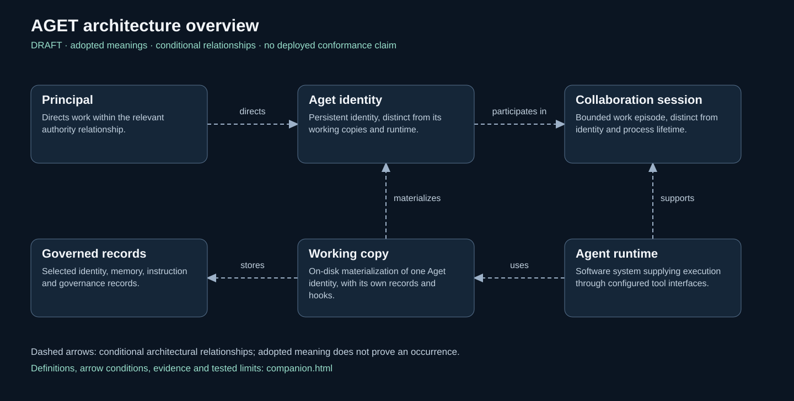
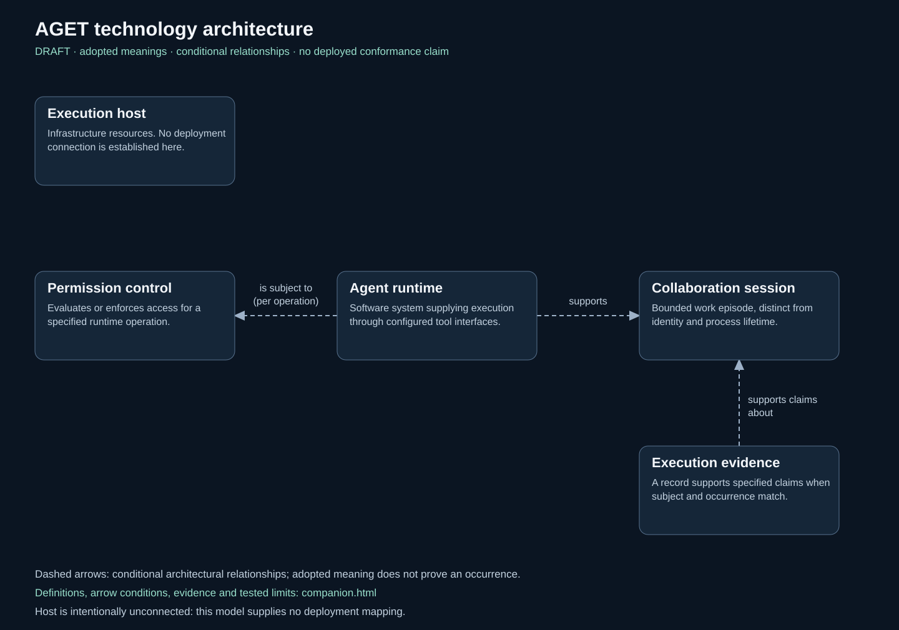

Publication draft · October 8, 2026
One architecture, two grounded views.
The overview separates the Principal, persistent Aget identity, working copy, records, runtime and collaboration session. The technology view adds operation permission control and execution evidence. Both use the same adopted meanings.
These architectural meanings were adopted for this model after independent review and scoped checks. The diagrams remain publication drafts. An arrow defines a conditional relationship; it does not show that a particular installation, permission decision or execution occurred.
The pinned public framework sources are supporting context, not a claim that this extended model is already a published framework standard. This is SKOS-aligned vocabulary with explicit scoped constraints, not a complete logical axiomatization.


Two variations of the reference views, preserved as a new descendant. “Materializes” replaces ambiguous “realizes”; runtime support replaces a stronger execution claim; permission is explicitly about an operation.